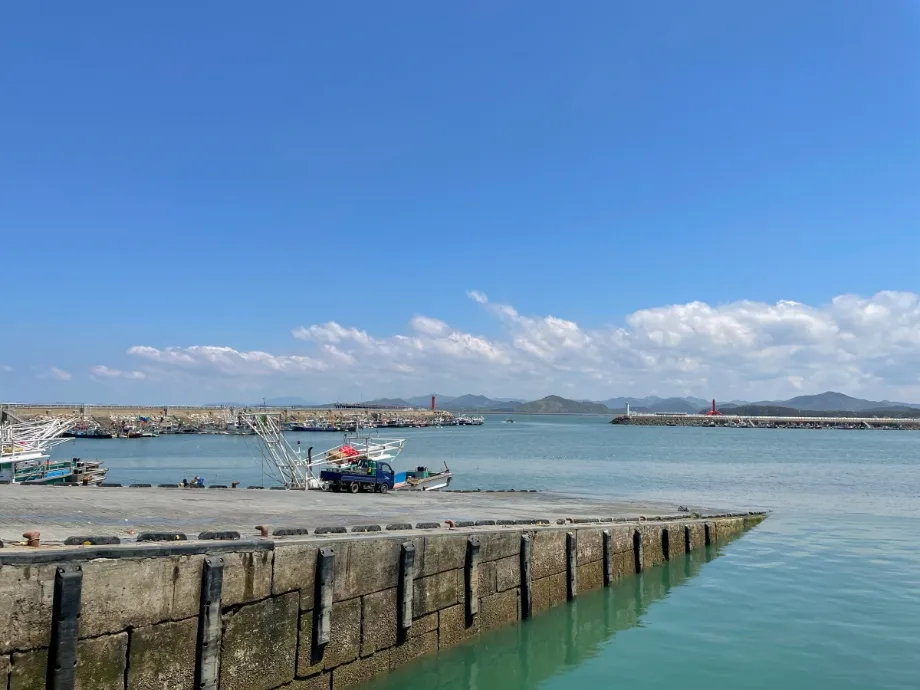
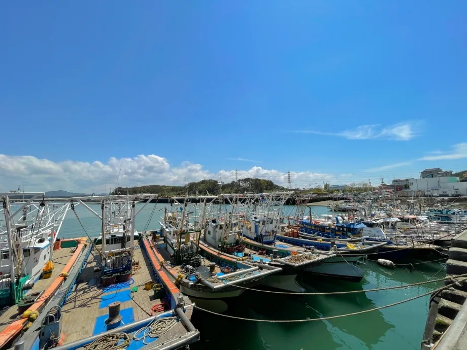
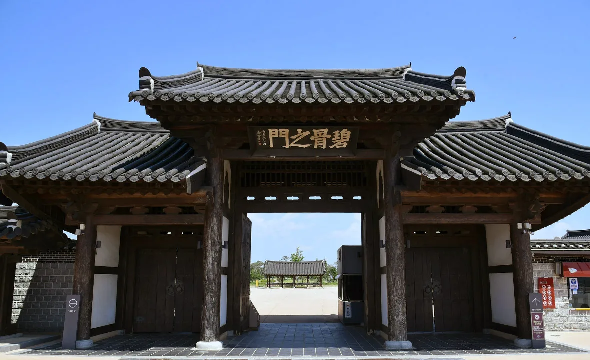
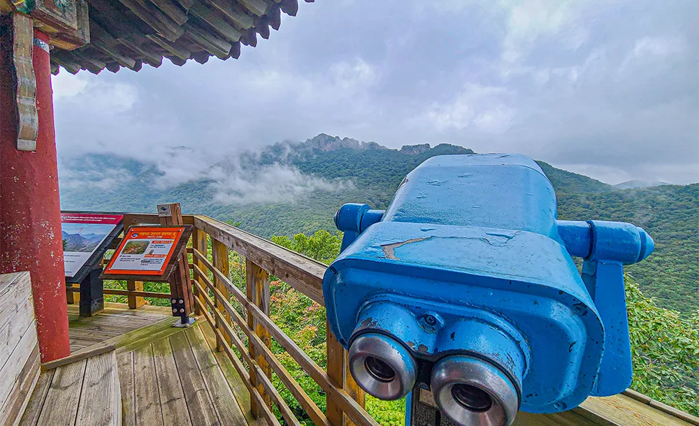

▲ 전북 정읍 내장산 진입로. 통행료가 면제되는 며칠은 근거리 이동 수요가 몰리는 구간이기도 하다
명절 통행료 면제는 매년 반복됩니다. 그런데 매년 같은 질문이 돌아옵니다. "연휴 마지막 날 밤에 출발하면 면제인가요?"
답은 됩니다. 면제 여부는 진입과 진출 중 하나만 면제 기간에 걸리면 성립하기 때문입니다. 이 한 줄 때문에 실제 면제가 적용되는 구간은 공고된 날짜보다 앞뒤로 하루씩 넓어집니다.
1. 아직 발표되지 않았습니다
먼저 분명히 해둘 것이 있습니다. 2026년 추석 연휴의 통행료 면제 기간은 이 기사를 쓰는 시점에 공식 발표되지 않았습니다.
면제는 매년 자동으로 확정되는 것이 아니라 정부가 연휴마다 결정해 공고합니다. 통상 연휴를 2~3주 앞두고 발표됩니다. 아래 내용은 제도가 작동하는 방식이며, 올해 적용 날짜는 발표를 확인해야 합니다.
📍 왜 미리 정해두지 않나
통행료 면제는 한시적 감면입니다. 도로 운영 수입에 직접 영향을 주기 때문에, 연휴 기간과 교통량 전망을 함께 보고 그때그때 결정합니다.
임시공휴일이 뒤늦게 지정되는 해에는 면제 기간도 함께 조정되는 경우가 있습니다.
2. 진입이든 진출이든, 하나면 됩니다
가장 많이 오해되는 지점입니다. 면제 여부는 진입 시각만으로도, 진출 시각만으로도 판정되지 않습니다. 둘 중 하나라도 면제 기간에 들어오면 면제입니다.
2026년 설 연휴가 그대로 사례입니다. 적용 기간은 2월 15일 0시부터 2월 18일 24시까지 나흘이었는데, 안내된 예시는 이랬습니다.
| 상황 | 진입 | 진출 | 판정 |
|---|---|---|---|
| 하루 일찍 출발 | 2월 14일(기간 전) | 2월 15일(기간 중) | 면제 |
| 기간 내 이동 | 2월 16일 | 2월 16일 | 면제 |
| 마지막 날 심야 출발 | 2월 18일(기간 중) | 2월 19일(기간 후) | 면제 |
| 완전히 벗어남 | 2월 19일 | 2월 19일 | 정상 부과 |
📍 공고 날짜보다 실제로는 이틀 넓습니다
적용 기간이 나흘이라도, 시작 전날 밤에 진입해 첫날 새벽에 도착하면 면제입니다. 마지막 날 밤에 진입해 다음 날 도착해도 면제입니다.
장거리 이동에서는 이 구조를 이용해 가장 한산한 시간대로 출발을 옮길 수 있습니다. 정체를 피하면서 면제도 받는 구간이 실제로 존재합니다.

▲ 충남 서천 홍원항. 서해안 방면은 연휴 통행료 면제 기간에 이동량이 늘어나는 축이다 ⓒ 서천군

▲ 충남 서천 홍원항. 심야에 출발해 새벽에 도착하는 동선이면 면제와 한산함을 함께 얻는다 ⓒ 서천군
3. 하이패스와 일반 차로
면제라고 해서 요금소를 무시하고 지나가면 안 됩니다. 차로에 따라 해야 할 행동이 다릅니다.
| 구분 | 진입 시 | 진출 시 | 표시 |
|---|---|---|---|
| 하이패스 차로 | 평소와 동일하게 통과 | 평소와 동일하게 통과 | 단말기에 0원 |
| 일반 차로 | 통행권 발권 | 통행권 제출 | 요금 0원 처리 |
일반 차로에서 통행권을 뽑지 않으면 진출 구간을 확인할 수 없어 처리에 시간이 걸립니다. 면제 기간에도 발권은 그대로 해야 합니다.
📍 하이패스 단말기를 끄지 마세요
면제 기간이라고 단말기 전원을 끄거나 카드를 빼두면, 하이패스 차로에서 미납 처리가 될 수 있습니다. 안내된 방법도 단말기 전원을 켠 채 요금소를 통과하는 것입니다.
혹시 하이패스 오류가 나더라도 그대로 통과한 뒤 영업소나 홈페이지에서 사후 정산하면 면제는 그대로 적용됩니다. 현장에서 멈춰 설 필요가 없습니다.
4. 민자 고속도로도 포함됩니다
민자 고속도로가 빠진다고 오해하는 경우가 많습니다. 2026년 설 연휴에는 한국도로공사가 관리하는 고속도로뿐 아니라 민자 고속도로 전 구간이 면제 대상에 포함됐고, 별도 신청 절차도 없었습니다.
평소 민자 구간은 재정 구간보다 요금이 높습니다. 같은 거리라도 1.3~1.8배 수준이고, 구간에 따라 격차는 더 벌어집니다. 면제 기간에 체감 이득이 가장 큰 쪽도 민자 구간입니다.

▲ 전북 김제 벽골제. 호남 방면 이동은 재정·민자 구간이 섞여 있어 평소 요금 편차가 크다 ⓒ 전북특별자치도 투어전북
5. 면제되지 않는 것
면제되는 것은 통행료입니다. 그 외의 비용은 그대로 나갑니다.
| 항목 | 면제 |
|---|---|
| 고속도로 통행료 | 면제 |
| 민자 고속도로 통행료 | 면제 |
| 관광지 주차료 | 부과 |
| 국립공원 주차료 | 부과 |
| 유료도로 외 시설 이용료 | 부과 |
연휴 여행 예산을 짤 때 통행료만 빼고 계산하면 어긋나는 이유입니다. 목적지에서 나가는 주차료는 그대로입니다.
6. 면제 기간을 어떻게 쓸 것인가
통행료가 0원이 되면 심리적으로 거리가 짧아집니다. 그러나 실제로 짧아지는 것은 비용이지 시간이 아닙니다.
오히려 면제 기간에는 같은 시간대에 같은 방향으로 차가 몰립니다. 요금이라는 억제 요인이 사라지기 때문입니다. 이 시기에 유리한 것은 이동 거리가 짧고 주차 여건이 나은 목적지입니다.
▲ 충남 홍성 해안. 통행료가 면제되는 며칠은 근거리 해안 노선의 혼잡이 특히 심해진다 ⓒ 홍성군

▲ 전북 정읍 내장산 전망대. 면제 기간에는 근거리 관광지의 주차 회전이 가장 큰 변수가 된다 ⓒ 전북특별자치도 투어전북
정리하면 세 가지입니다. 첫째, 올해 적용 기간은 발표를 확인할 것. 둘째, 진입과 진출 중 하나만 걸려도 면제라는 점을 출발 시각 결정에 활용할 것. 셋째, 통행료가 빠져도 주차료는 남는다는 것입니다.